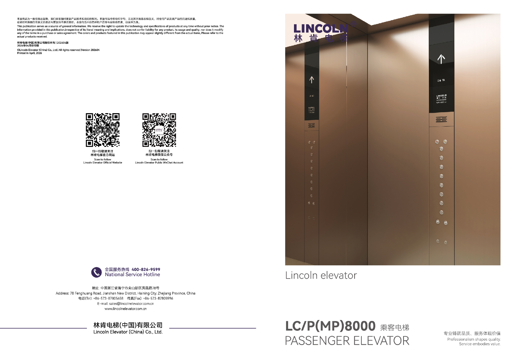
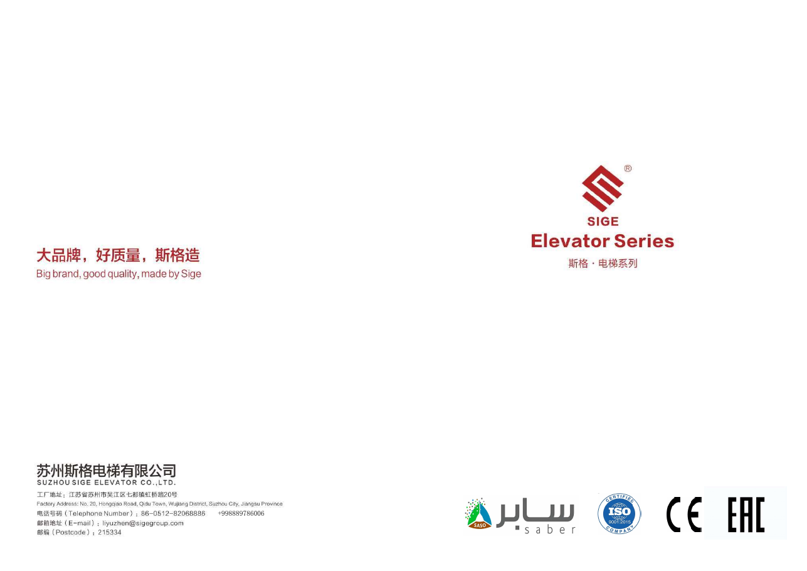
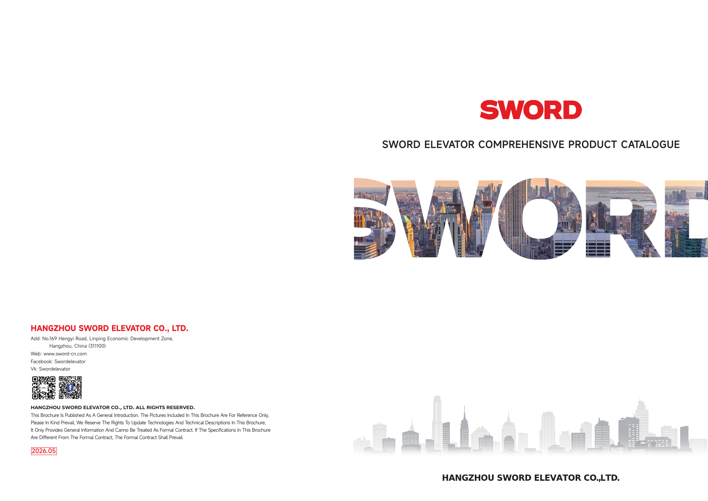
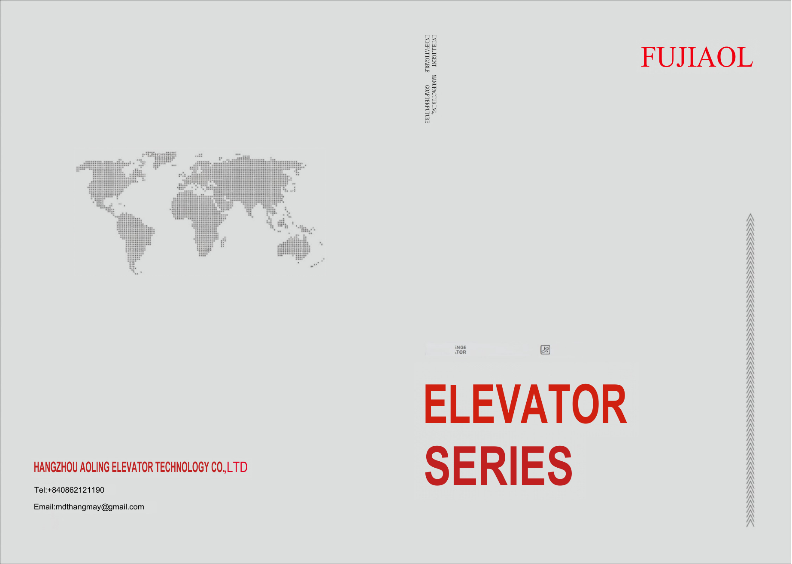

LINCOLN · 2026
Пассажирские лифты
Интеллектуальное управление, энергоэффективность, безопасность, варианты кабин, дверей и панелей управления.
Открыть PDFДля жилых домов, деловых пространств и специальных задач. Выберите направление — подберём оборудование под ваш проект.

Интеллектуальное управление, энергоэффективность, безопасность, варианты кабин, дверей и панелей управления.
Открыть PDF
Пассажирские, панорамные, больничные, автомобильные и грузовые лифты, эскалаторы и движущиеся дорожки.
Открыть PDF
Серии WD700P, S700P/L, S700G, WD800, S800H, SIND, S700F/S, а также эскалаторы S900E и траволаторы S900T.
Открыть PDF
Пассажирские и грузовые решения, оформление кабин, двери, панели управления, стандартные функции и эскалаторы.
Открыть PDFОбсудим задачу и найдём подходящее решение.